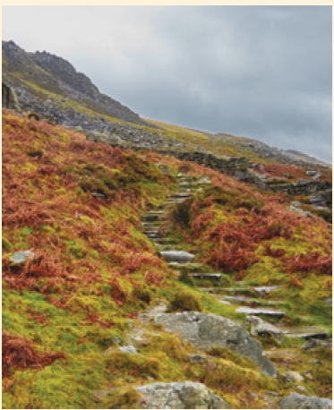

Proiect tematic
Cartea legendelor – elemente de mitologie românească
 Citiţi cu atenție etapele, apoi realizaţi proiectul, folosindu-vă de sugestiile date.
Citiţi cu atenție etapele, apoi realizaţi proiectul, folosindu-vă de sugestiile date.
-
Ce veți face?
Veți alcătui o carte a legendelor din zona în care locuiți, cu ilustrații și povestiri ce vor conține elemente fantastice sau miraculoase, prin care se explică apariția unor localități, forme de relief sau obiective turistice din județul vostru.
-
De ce veți face?
Pentru a descoperi cultura populară a zonei în care locuiți și pentru a afla mai multe despre mitologia românească.
-
Cum veți face?
- Veți lucra în echipe de 5-10 elevi.
- Pe copertă, veți scrie titlul – Cartea legendelor sau un alt titlu, propus de voi –, numele membrilor echipei și clasa din care faceți parte. Veți adăuga ilustrații originale.
- Pe prima pagină veți prezenta cuprinsul cărții.
-
Fiecare dintre paginile următoare va fi realizată de câte un elev și va conține:
- legenda aleasă, menționându-se zona/ localitatea din care provine și sursa din care a fost preluată (numele celui de la care a fost auzită/ culegerea de folclor în care a fost inclusă etc.);
- un desen sau o fotografie care să ilustreze localitatea, forma de relief sau obiectivul turistic ce constituie subiectul legendei.
MIT, mituri, s. n. Povestire fabuloasă cu caracter sacru, care cuprinde credințele unui popor despre originea Universului și a fenomenelor naturii, despre zei și eroi legendari etc.
MITOLOGÍE, mitologii, s. f. Totalitatea miturilor create de un popor sau de un grup de popoare înrudite.
Iată o sugestie!
În mijlocul munților Vrancei, spre fundul apei Năruja, se află piscul cu numele „Scările lui Vodă”. Povestea spune că, în timpurile vechi, Ștefan cel Mare, rătăcind prin codri cu o ceată de ostași, a ajuns în golul Verdelui, într-o poiană mare și frumoasă, unde ceata marelui voievod se puse de se hodini.
Dar Vodă, având nevoie să cerceteze cât mai bine împrejurimile, pentru a ști în ce loc se află și a nu se trezi înconjurat fără de veste de dușmani, se gândi ca să se urce pe creasta muntelui Petrosul, cel mai înalt vârf din apropiere și care se ridica chiar în fața poienii unde poposiseră.
Și, fiindcă muntele era stâncos și coasta din cale-afară de povârnită și prăpăstioasă, oștenii au săpat niște trepte pe zarea piscului, până ce Vodă și ai săi s-au putut ridica în vârf.
De aici, au pornit cu toții încotro i-or fi îndreptat ochii și mintea. Poate spre o nouă biruință, pe care numai iscusința și destoinicia fără margini a marelui Ștefan se învrednicea s-o câștige, în acele vremuri, cu arcașii săi, puțini la număr, dar voinici și meșteri la luptă.
Interculturalitate
14